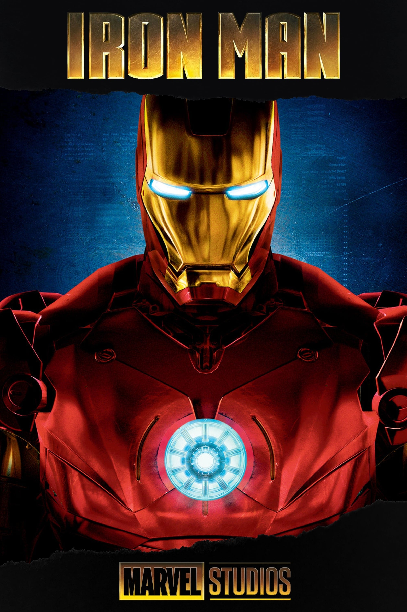
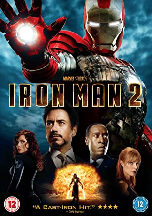
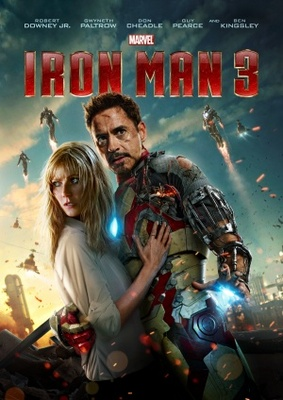

Iron Man

Iron Man 2

Tony Stark es un inventor de armamento brillante que es secuestrado en el extranjero. Sus captores son unos terroristas que le obligan a construir una máquina destructiva pero Tony se construirá una armadura para poder enfrentarse a ellos y escapar. (Cuando se procese el drive se colocará la película completa).
Con el mundo ahora consciente de que él es Iron Man, el millonario inventor Tony Stark debe forjar nuevas alianzas y enfrentarse a un nuevo y poderoso enemigo.
Iron Man 3

El descarado y brillante Tony Stark, tras ver destruido todo su universo personal, debe encontrar y enfrentarse a un enemigo cuyo poder no conoce límites. Este viaje pondrá a prueba su entereza una y otra vez, y le obligará a confiar en su ingenio. (Cuando se procese el drive se colocará la película completa).